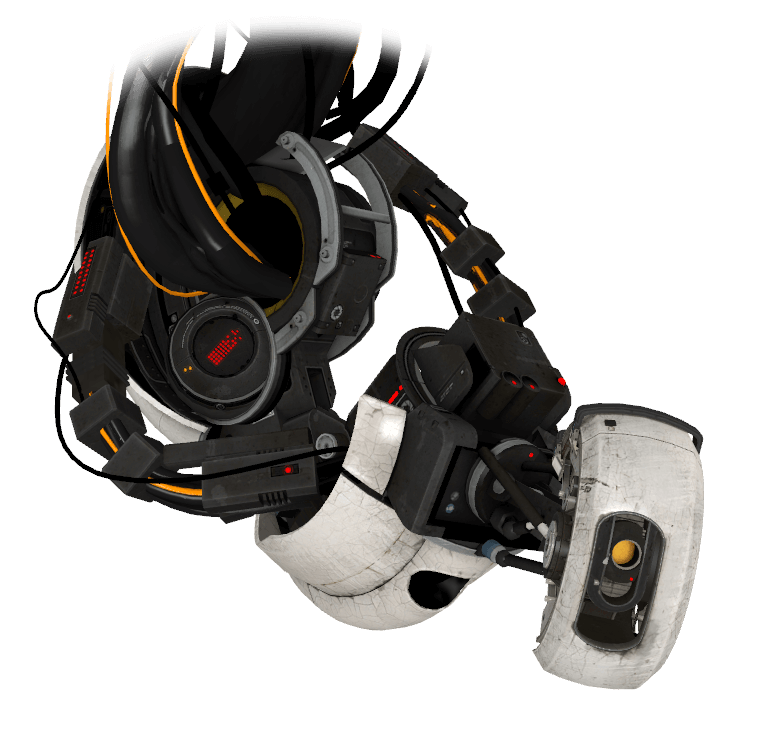

GLaDOS

Background
GLaDOS (Genetic Lifeform and Disk Operating System) is the main antagonist of the Portal series. She is an artificial intelligence created by Aperture Science to oversee the testing facility and conduct experiments on test subjects, including Chell. GLaDOS is known for her sarcastic and manipulative personality, often using psychological tactics to challenge and deceive the player. Throughout the games, she serves as both a guide and an obstacle, providing instructions while also creating dangerous situations for the player to navigate.
Appearances
- Portal (2007)
- Portal 2 (2011)
Abilities
GLaDOS possesses advanced artificial intelligence capabilities, allowing her to control the Aperture Science facility and manipulate its various systems. She can create complex test chambers, deploy turrets, and utilize various tools to challenge the player. GLaDOS also has a vast knowledge of science and technology, which she uses to her advantage in creating obstacles and puzzles for the player to solve.
Personality
GLaDOS is characterized by her dark humor, sarcasm, and manipulative nature. She often taunts and deceives the player, creating a sense of tension and uncertainty throughout the games. Despite her antagonistic role, GLaDOS has moments of vulnerability and complexity, particularly in Portal 2, where her backstory and motivations are explored in greater depth. Her interactions with Chell and other characters reveal a multifaceted personality that contributes to her status as an iconic video game villain.